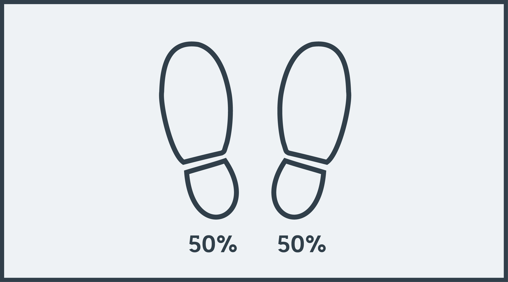
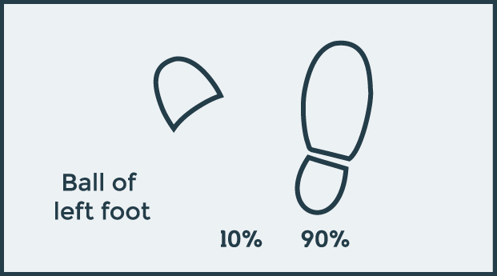
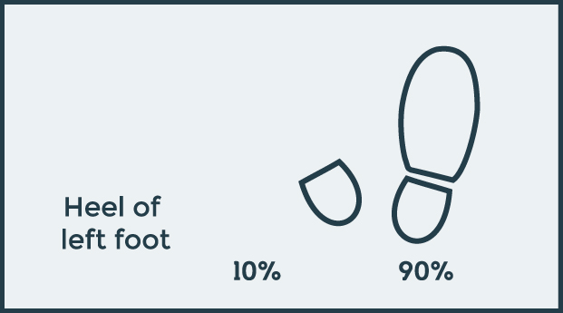
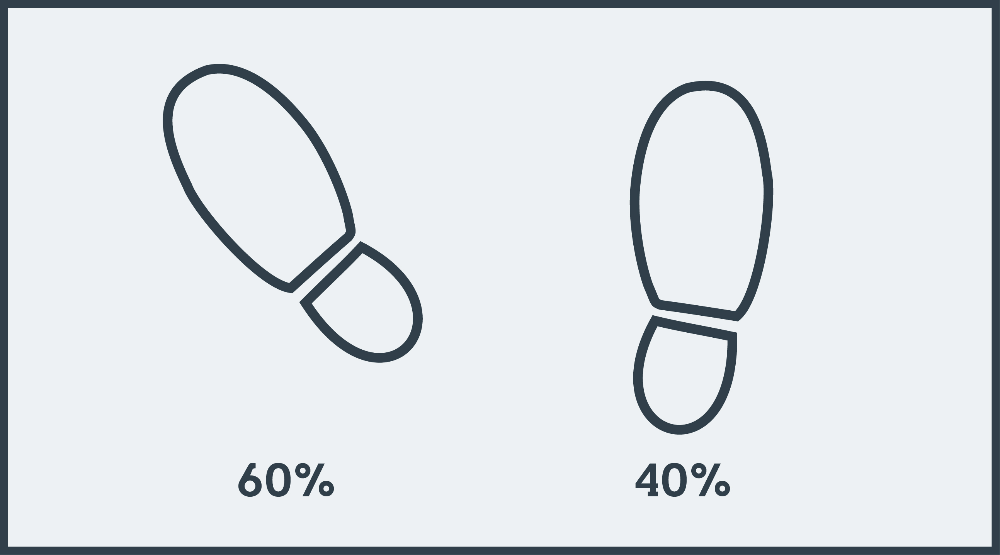
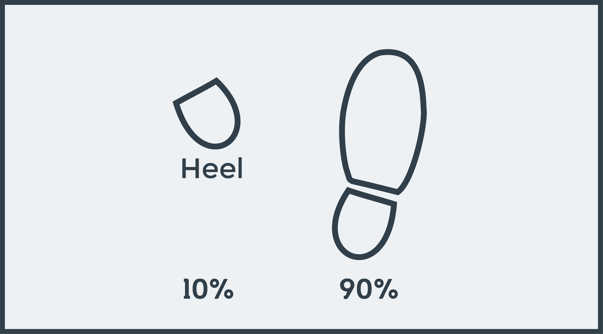
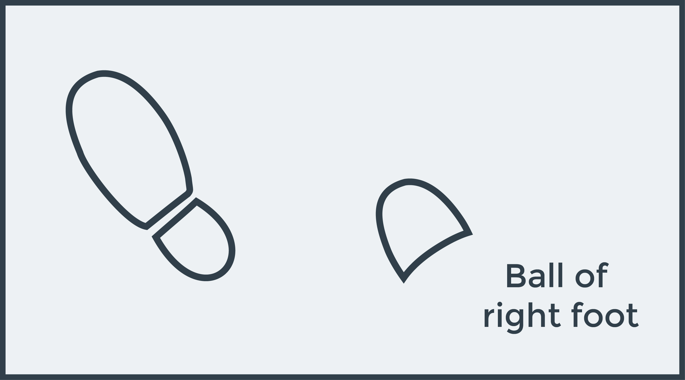
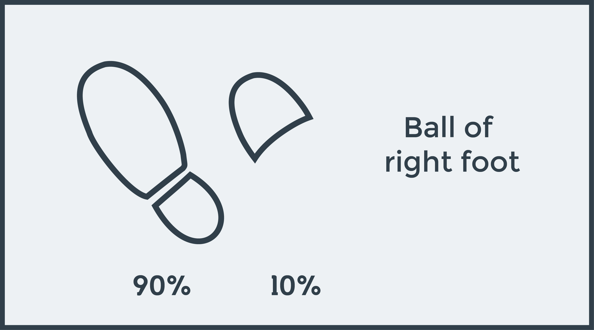

Tai Chi Footwork
Creative Project | Fall 2020
REL 210R – Dr. Eric Reinders
- Shoulder stance

50-50% of the weight
- Empty stance

10-90% of the weight
- Step out (keep weight on right)

10-90% of the weight
- Bow stance (shift weight towards left)

60-40% of the weight
- Shift weight back

10-90% of the weight
- Shift weight to left

- Step into empty stance

90-10% of the weight
- Continue {3 - 7}
But in reverse